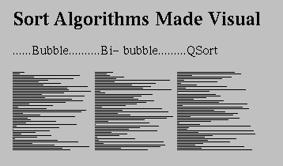
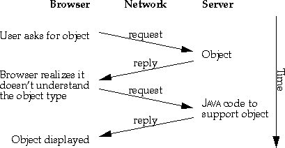
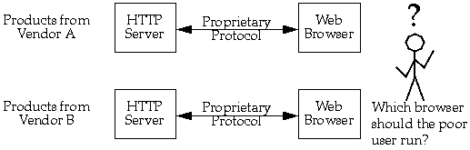
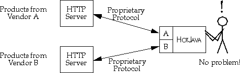
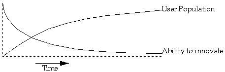

Browsers allow people to treat the data spread across the Internet as a cohesive whole. Web browsers integrate the function of fetching the data with figuring out what it is and displaying it. One of the most important file types browsers understand is the hypertext markup language (HTML). HTML allows text data objects to embed simple formatting information and references to other objects.
HotJava is a Web browser that makes the Internet "come alive." HotJava builds on the Internet browsing techniques established by Mosaic(tm) and expands them by implementing the capability to add arbitrary behavior, which transforms static data into dynamic applications. The data viewed in other browsers is limited to text, illustrations, low-quality sounds and videos.
Using HotJava you can add applications that range from interactive science experiments in educational material to games and specialized shopping applications. You can implement interactive advertising and customized newspapers; the possibilities are endless.
In addition, HotJava provides a way for users to access these applications in a new way. Software transparently migrates across the network. There is no such thing as "installing" software. It just comes when you need it (after, perhaps, you pay for it). Content developers for the World Wide Web don't have to worry about whether or not some special piece of software is installed in a user's system; it just gets there automatically. This transparent acquisition of applications frees developers from the boundaries of the fixed media types like images and text and lets them do whatever they'd like.
HotJava has these dynamic capabilities because it is written in a new language called Java(tm). Briefly, one can think of Java as a simplified, safe, and portable version of C++. It has an architecture-neutral distribution format, meaning that compiled Java code l runs on any CPU architecture. See The Java Language: A White Paper for more information.
For example, the following illustration is a snapshot of HotJava in use. Each diagram in the document represents a sort algorithm. Each algorithm sorts an array of integers. Each horizontal line represents an integer: the length of the line corresponds to the value of the integer and the position of the line in the diagram corresponds to the position of the integer in the array.

In a book or HTML document, the author has to be content with these static illustrations. Using Java the author can enable HotJava users to click on the illustrations and see the algorithms animate. If you're running HotJava now, try it and see:
Using these dynamic facilities, content providers can define new types of data and behavior that meet the needs of their specific audiences, rather than being bound by a fixed set of objects.
The following illustration shows how HotJava negotiates with a server when it encounters an object of an unknown type.
The dynamic incorporation of protocols has special significance to how business is done on the Internet. Many vendors are providing new Web browsers and servers with added capabilities such as billing and security. These capabilities most often take the form of new protocols. Each vendor implements something unique, a new style of security for example, and sells a server and browser that speak this new protocol. If a user wants to access data on multiple servers each having a proprietary new protocol, the user needs multiple browsers. Needing several browsers is clumsy and defeats the synergistic cooperation that makes the WWW work.
With HotJava as a base, vendors can produce and sell exactly the piece that is their added value to what exists and integrate it smoothly with the products of other vendors. This seamless integration creates a final result that is very convenient for the end user.
Protocol handlers get installed in a sequence similar to how content handlers get installed (see Dynamic types above): HotJava is given a reference to an object (a URL). If the handler for that protocol is already loaded, it is used. If not, HotJava searches, first the local system and then the system that is the target of the URL, for the protocol needed to interact with the object.
The dynamic nature of HotJava solves this problem. Within a community that uses HotJava, individuals can experiment with new facilities while at the same time preserving compatibility and interoperability. Data can be published in new formats and distributed using new protocols and the implementations of these are automatically and safely installed. The upgrade problem does not exist.
Inventors of new technology are not the only ones who need these facilities. Almost all organizations need to adapt to changing requirements. HotJava's flexibility can greatly aid organizations to adapt to change. As an organization requires new protocols and new data types become important, they can be transparently incorporated using HotJava.
Dynamic types
HotJava's dynamic behavior is also used for understanding different types of objects. For example, most Web browsers can understand a small set of image formats (typically GIF, X11 pixmap, and X11 bitmap). If they see some other type, they have no way to deal with it directly. HotJava, on the other hand, can dynamically link the Java code from the host that has the image, allowing it to display the new format. So, if someone invents a new compression algorithm, the inventor just has to make sure that a copy of the Java code is installed on the server that contains the images the inventor wants to publish. All the other browsers in the world will have to be upgraded to take advantage of the new algorithm. HotJava upgrades itself on the fly when it sees this new type.

Dynamic protocols
The protocols that Internet hosts use to communicate among themselves are key components of the net. For the World Wide Web, the hypertext transmission protocol (HTTP) is the most important of these communication protocols. In documents on the Web a reference to a document is called a uniform resource locator (URL). The URL contains the name of a protocol, HTTP for example, that is used to find that document. Current Web browsers have the knowledge of HTTP built-in. HotJava, rather than having built-in protocol handlers, uses the protocol name to link in the appropriate handler. This allows new protocols to be incorporated dynamically.


Freedom to innovate
Innovation on the Internet follows a pattern: First a new technology is developed. Then the developers of the technology can freely experiment with the technology because no one else is using it and there are no compatibility issues. Gradually, people start using the new technology, and as they do an upgrade problem is created. Compatibility and interoperability concerns slow the pace of innovation. The Internet is now in a state where even simple changes that everyone agrees have significant merit are very hard to make.

Summary
Much of what you've read here may seem like magic: dynamic incorporation of
protocols, dynamic understanding of new types, dynamic content and an
enhanced ability to support innovation in an environment as large and
diverse as the World Wide Web. The "magic" of HotJava's dynamism comes from
its use of the Java language. For a better understanding of how Java makes
HotJava possible see:
The Java Language: A White Paper